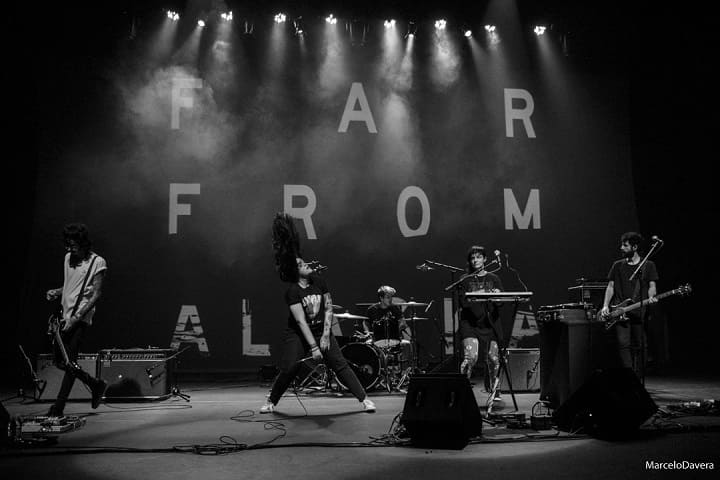

Far from Alaska is a fucking an awesome Brazilian rock band formed in 2012 in Natal, Rio Grande do Norte, and based in São Paulo, São Paulo.
All members lived in Natal by the time the band was formed, but only guitarist Rafael Brasil and vocalist Emmily Barreto were born there. Keyboardist Cris Botarelli is from São Paulo, bassist Edu Figueira is from Mossoró (also a Rio Grande do Norte city) and drummer Lauro Kirsch is from Cuiabá, Mato Grosso. Beside, all members have previously worked with other bands: Botarelli and Kirsch played together in a band called Planant; she also performed with Barreto in Talma & Gadelha; Brasil played in Calistoga and, together with Figueira and Kirsch, he was part of Venice.
FFA was formed in 2012, initially as a project of Cris and Emmily for the latter to sing. They called the other three members and considered the band a side project only. In that same year, they won the contest "Som Para Todos", which granted them a distribution contract with Deckdisc and the right to perform at Planeta Terra Festival in São Paulo. That was their second live performance ever, after which they had the chance of speaking to Shirley Manson, vocalist of Garbage, who complimented them two months later.
According to keyboardist Cris Botarelli, the band's unlikely name does not mean anything special; it was a mere suggestion of vocalist Emmily Barreto's mother that ended up pleasing the band members after they failed to reach an agreement. At the same occasion, she also explained that the band don't see a problem at writing English lyrics since the public from Rio Grande do Norte (the band's home state) has been receiving it well. In another interview, Botarelli also said that singing in English was a natural decision given that the vast majority of the bands they listen to have English lyrics.
Far From Alaska unlikely promotion (eating pizza)

Far From Alaska in concert
Concert chronicle of a Rock Band
I’d gotten a good seat in the theater, right in front of the stage, a great place to enjoy the show and take good pictures. My good fortune, however, was short-lived. Before starting to sing, Emmily Barreto called the audience to the front of the stage — if I wanted to shoot, I‘d must be in the middle of the crowd. That was ok because I was able to walk free throughout the theater and shoot the band from various angles. Their sound doesn’t call for a sitting audience, by the way.
Far From Alaska is a very tight rock band. The heavier parts are felt like a wall of sound by the audience thanks to the precision with which each member plays their parts. Rafael and Eduardo put good use to a lot of effects on guitar and bass. The interaction between them and Lauro Kirsch is great, which ensures that the dynamics variations have the intended impact.
They opened with Thievery, which was followed by more songs from modeHuman, plus two songs from the upcoming second album. Emmily’s voice was what caught my attention when I first heard the band live, a few months ago. She travels easily between the melodious and soft singing and the aggressive moments in which the song demands more vocal power.